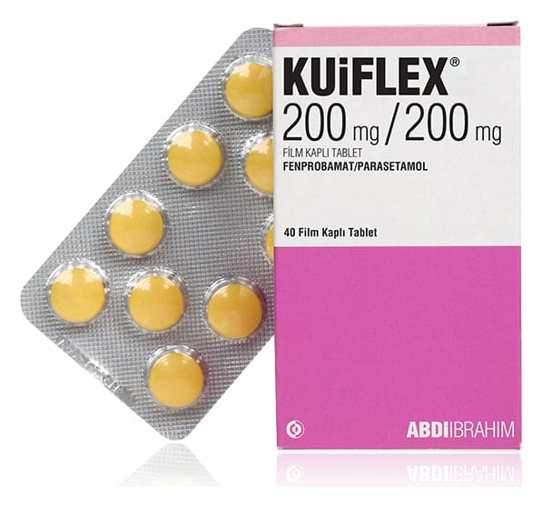

Kuiflex 200 mg/200 mg Film Kaplı Tablet, 40 Adet

Ne için kullanılır
KT · Bölüm 1• KUİFLEX®film kaplı tablet formunda bir ürün olup, ağrı kesici ve kas gevşetici olarak adlandırılan ilaç grubuna dahildir. • Sarı renkli ve film kaplı her bir tablet etkin madde olarak 200 mg fenprobamat ve 200 mg parasetamol içermektedir. KUİFLEX®40 film kaplı tablet içeren blister ambalajda kullanıma sunulmaktadır. • KUİFLEX®, kas spazmının (istemsiz kasılma) neden olduğu ağrılı durumlarda spazmın giderilmesi ve ağrının hafifletilmesi amacıyla kullanılmaktadır. Bu ilacı kullanmaya başlamadan önce bu KULLANMA TALİMATINI dikkatlice okuyunuz, çünkü sizin için önemli bilgiler içermektedir.
• Bu kullanma talimatını saklayınız. Daha sonra tekrar okumaya ihtiyaç duyabilirsiniz. • Eğer ilave sorularınız olursa, lütfen doktorunuza veya eczacınıza danışınız. • Bu ilaç kişisel olarak sizin için reçete edilmiştir, başkalarına vermeyiniz. • Bu ilacın kullanımı sırasında, doktora veya hastaneye gittiğinizde bu ilacı kullandığınızı doktorunuza söyleyiniz. • Bu talimatta yazılanlara aynen uyunuz. İlaç hakkında size önerilen dozun dışında yüksek veya düşük doz kullanmayınız.
2. KUİFLEX®’i kullanmadan önce dikkat edilmesi gerekenler KUİFLEX®’i aşağıdaki durumlarda KULLANMAYINIZ Eğer; • KUİFLEX®’in içeriğinde bulunan etkin maddelerden veya bunların türevlerinden herhangi birine karşı alerjiniz var ise, • Hamileyseniz, • Emzirme döneminde iseniz, • Ağır karaciğer ve böbrek yetmezliğiniz varsa, • Enzim yetersizliği ile ilgili genetik bir hastalığınız var ise, • Doktorunuz sizde miyasteni gravis (bir tür kas güçsüzlüğü hastalığı) veya porfiri (kan sistemi ile ilgili kalıtsal bir metabolizma bozukluğu)adı verilen hastalıklar bulunduğunu söylemiş ise, • Solunum yetmezliğiniz var ise, KUİFLEX®’i kullanmayınız.
KUİFLEX®tedavisi esnasında alkol kullanılmamalıdır. KUİFLEX®çocuklarda kullanılmamalıdır.
KUİFLEX®'i aşağıdaki durumlarda DİKKATLİ KULLANINIZ
Eğer; • Karaciğer ve böbrek fonksiyon bozukluğunuz var ise, • Akciğerinizle ilgili bir hastalık var ise, • Anemi (kansızlık) hastalığınız var ise KUİFLEX®dikkatlice ve doktorunuzun gözetimi altında kullanılmalıdır. • Alkolik karaciğer hastalarında dikkatli kullanılmalıdır.
Şiddetli böbrek yetmezliği veya sepsis (bakterilerin ve toksinlerinin kanda dolaşarak organ hasarına yol açması) dâhil olmak üzere ciddi hastalıklarınız varsa veya yetersiz beslenme, kronik alkolizmden muzdaripseniz veya aynı zamanda flukloksasilin (bir antibiyotik) kullanıyorsanız. Bu durumlardaki hastalarda, parasetamol uzun süre düzenli dozlarda kullanıldığında veya parasetamol flukloksasilin ile birlikte alındığında metabolik asidoz (kan ve sıvı anormalliği) adı verilen ciddi bir durum bildirilmiştir.
Metabolik asidozun belirtileri şunları içerebilir: derin ve hızlı nefes almayla birlikte ciddi nefes alma zorlukları, uyuşukluk, mide bulantısı ve kusma hissi.
Doktorunuza danışmadan KUİFLEX®'i 10 günden fazla kullanmayınız. Alkol alan kişilerde karaciğer zehirlenmesi (hepatotoksisite) riski nedeniyle günlük alınan parasetamol dozunun 2000 mg’ı aşmaması gerekir.
Kanın pıhtılaşmasını engelleyen ve ağız yolundan alınan herhangi bir ilaç (oral antikoagülan) kullanıyor iseniz, KUİFLEX®’in uzun süre kullanılması sakıncalıdır. Hekim tarafından önerilen dozdan daha uzun süreli veya daha yüksek dozda kısa süreli kullanıldığında KUİFLEX®’in bağımlılık yapma riski vardır.
Birden (akut) yüksek doz verildiğinde ciddi karaciğer toksisitesine neden olur. Erişkinlerde uzun süreli (kronik) günlük dozlarda karaciğer hasarına neden olabilir. Parasetamolü ilk defa
kullananlarda veya daha önce kullanım hikâyesi olanlarda, kullanımın ilk dozunda veya tekrarlayan dozlarında deride kızarıklık, döküntü veya bir deri reaksiyonu oluşabilmektedir. Bu durumda doktor ile irtibata geçilerek KUİFLEX®kullanımının bırakılması ve alternatif bir tedaviye geçilmesi gerekmektedir. Parasetamol ile deri reaksiyonu gözlenen kişi bir daha KUİFLEX®veya parasetamol içeren başka bir ilaç kullanmamalıdır. Bu durum, ciddi ve ölümle sonuçlanabilen Steven Johnson Sendromu, toksik epidermal nekroliz ve akut generalize ekzantematöz püstüloz dahil cilt reaksiyonlarına neden olabilmektedir. Bu uyarılar, geçmişteki herhangi bir dönemde dahi olsa sizin için geçerliyse lütfen doktorunuza danışınız. KUİFLEX®’in yiyecek ve içecek ile kullanılması KUİFLEX®’in yiyecek ve içecekler ile bilinen bir etkileşimi yoktur.
Hamilelik İlacı kullanmadan önce doktorunuza veya eczacınıza danışınız.
Hamileyseniz veya hamile kalmayı planlıyorsanız doktorunuzla konuşmalısınız. KUİFLEX®’i gebeliğin ilk 3 ayında kullanmayınız. Gebeliğin son 6 ayı içerisinde KUİFLEX®’i kullanıp kullanamayacağınıza ancak doktorunuz karar verebilir.
Tedaviniz sırasında hamile olduğunuzu fark ederseniz hemen doktorunuza veya eczacınıza danışınız. Emzirme İlacı kullanmadan önce doktorunuza veya eczacınıza danışınız.
Eğer emziriyorsanız KUİFLEX®’i kullanmamalısınız. Araç ve makine kullanımı KUİFLEX®fiziksel ve zihinsel kabiliyeti etkileyebileceğinden motorlu araç ve iş makinesi kullananlar ile yüksekte ve dikkat gerektiren hassas işlerde çalışanlarda kullanılmamalıdır. KUİFLEX®'in içeriğinde bulunan bazı yardımcı maddeler hakkında önemli bilgiler KUİFLEX®renklendirici olarak gün batımı sarısı FCF ve ponceuau 4R kırmızısı içerir. Alerjik reaksiyonlara sebep olabilir.
KUİFLEX®laktoz içermektedir. Eğer daha önceden doktorunuz tarafından bazı şekerlere karşı intoleransınız olduğu söylenmişse bu tıbbi ürünü almadan önce doktorunuzla temasa geçiniz.
KUİFLEX®’in her dozu 1 mmol (23 mg)’dan daha az sodyum içerir; yani aslında “sodyum içermez”.
Diğer ilaçlar ile birlikte kullanımı Özellikle alkol veya aşağıda belirtilen ilaçlardan herhangi birini kullanıyorsanız doktorunuzu veya eczacınızı mutlaka bilgilendiriniz. • Kanın pıhtılaşmasını engelleyen ilaçlar (örneğin etkin madde olarak varfarin ve asenokumarol içeren ilaçlar)
• Kolesterol yüksekliği tedavisinde kullanılan ve etkin madde olarak kolestiramin isimli maddeyi içeren ilaçlar • Epilepsi (sara) tedavisinde kullanılan ilaçlar (örneğin; etkin madde olarak fosfenitoin, lamotrijin, karbamazepin, fenobarbital ve fenitoin içeren ilaçlar) • Bazı antibiyotikler (örneğin: etkin madde olarak kloramfenikol, içeren ilaçlar) • Tüberküloz tedavisinde kullanılan ilaçlar (örneğin: etkin madde olarak izoniyazid, pirazinamid ve rifampin içeren ilaçlar) • Gut (damla) hastalığının tedavisinde kullanılan ve etkin madde olarak sülfinpirazon isimli maddeyi içeren ilaçlar • Ağrı kesici olarak kullanılan ve etkin madde olarak diflunisal isimli etkin maddeyi içeren non steroidal antiinflamatuvar ilaçlar • Kanser tedavisinde kullanılan ve etkin madde olarak busulfan isimli maddeyi içeren ilaçlar • Şeker (diyabet) hastalığının tedavisinde kullanılan ve etkin madde olarak eksenatid isimli maddeyi içeren ilaçlar • Tanı amacıyla kullanılan ve etkin madde olarak metirapon isimli maddeyi içeren ilaçlar • Yüksek tansiyona bağlı krizlerin (hipertansif kriz) tedavisinde kullanılan ve etkin madde olarak fenoldopam isimli maddeyi içeren ilaçlar • Virüslerin neden olduğu enfeksiyonların (viral enfeksiyonlar) tedavisinde kullanılan ilaçlar (örneğin; etkin madde olarak abakavir sülfat, lamivudin ve zinovudin içeren ilaçlar) • Anksiyete (endişe ve tedirginlik hali) ve uykusuzluk tedavisinde kullanılan ilaçlar (santral sinir sistemi depresanları) • Ruhsal bozukluk tedavisinde kullanılan ilaçlar (psikotropik ilaçlar) • Doğum kontrol hapları • Flukloksasilin (antibiyotik), kan ve sıvı anormalliği (metabolik asidoz) riski nedeniyle acil tedavi gerektiren bir ilaç (bkz. bölüm 2)
Eğer reçeteli ya da reçetesiz herhangi bir ilacı şu anda kullanıyorsanız veya son zamanlarda kullandınız ise lütfen doktorunuza veya eczacınıza bunlar hakkında bilgi veriniz.